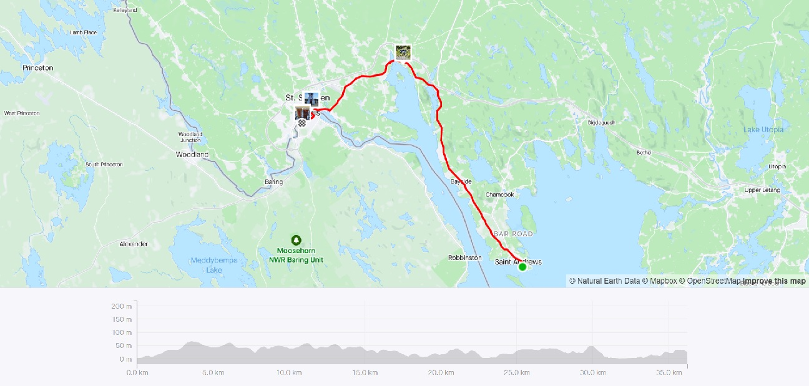

Strava Route Day 1 - Whiting ME to Lubec ME
Strava Route Day 1 - Whiting ME to Lubec MERide With GPS Links
Day 1 - Whiting ME to Lubec ME - navigated with Google Maps only
Day 2 - Lubec ME to St. Andrews NB
Day 3 - St. Andrews NB to Calais ME
In late July, I quit my job at the MAPC (a wonderful organization and colleagues!!) and joined the IBI Group as a Transportation Planner and Transit Data Analyst. In the few days I had between these two jobs, I decided to complete an item on my bucket list - crossing an international border on my bike! I had initially thought of biking from Burlington VT to Montreal - and complete the final segment of the original Bostreal. However, the complex logistics and high cost of that trip made me shelve that. I realized that I could alternatively bike from Lubec ME! While I had thought doing a longer trip from Lubec to Halifax (mix of bike, ferry, and bus) due to the limited time, I decided on a shorter trip.
Lubec was a good choice. I had already been there the year before with a friend, and I had really liked the town. Back then, the border was closed due to COVID restrictions, and now I was finally going to be able to cross!
Strava Route Day 1 - Whiting ME to Lubec ME
 Strava Route Day 2 - Lubec ME to St. Andrews NB
Strava Route Day 2 - Lubec ME to St. Andrews NB
 Strava Route Day 3 - St. Andrews NB to Calais ME